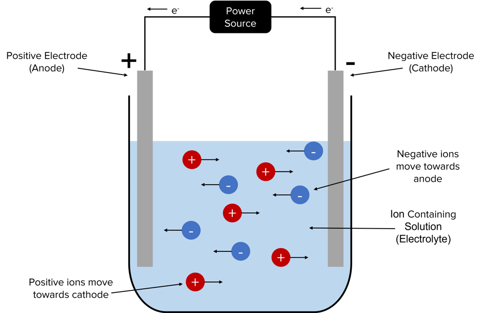

The table of ions and the reactivity series are in the Data section at the end of the paper. In this paper's reactivity series, nickel (Ni) sits between iron and lead.
Multiple choice (6 marks)
Which of the following best describes the properties of a metal?
Copper metal is often used in electrical cabling because it is:
Ductile means it can be drawn out into wires.
If a metal reacts by losing electrons, then:
When sodium reacts with water, the likely products are:
Which of the following metals would you expect to be least reactive with water?
With reference to the reactivity series, the extraction of copper metal could be achieved by which process?
Copper is below carbon in the reactivity series, so carbon can reduce its ore; electrolysis also works for any metal.
Short answer (33 marks)
The text below describes metallic bonding, but it contains three deliberate errors. Identify each error and give a correction.
Metallic bonding occurs when metal atoms share their electrons equally with non-metal atoms, creating a lattice of positively charged ions immersed in a "sea of electrons". This type of bonding is characterised by its inability to conduct electricity and its brittle nature, making it ideal for use in electrical wiring and construction materials.
- Error 1: "non-metal atoms" should be metal atoms (the electrons are shared among metal atoms).
- Error 2: "inability" should be ability (metals conduct electricity).
- Error 3: "brittle" should be malleable or ductile.
Question 2 (8 marks)
The boiling points of three metals are given below.
| Metal | Boiling point (°C) |
|---|---|
| Na | 892 |
| K | 760 |
| Ca | 1490 |
In which group and period of the periodic table are these metals found?
Na: group , period
K: group , period
Ca: group , period
Write the electron configuration for each of these metals (e.g. 2,8,3).
Na:
K:
Ca:
Use the metallic bonding model to suggest why calcium has a much higher boiling point than potassium.
Calcium forms Ca2+ ions, which have a higher charge than K+ ions, and each atom gives two electrons to the "sea of electrons" (1 mark). This creates a stronger metallic bond, which needs more energy to break (1 mark).
Question 3 (3 marks)
Observations of the reactions of metals A, B and C with dilute hydrochloric acid are summarised below:
- Metal A does not react with dilute hydrochloric acid.
- Metal B is stored in oil because of its high reactivity, and it reacts violently with dilute hydrochloric acid.
- Metal C reacts very slowly with dilute hydrochloric acid.
Identify which metal is aluminium, copper and sodium.
Metal A:
Metal B:
Metal C:
Copper is the least reactive and is below hydrogen, so it doesn't react with HCl. Sodium is the most reactive and must be stored under oil. Aluminium is moderately reactive (and has a protective oxide layer), so it reacts slowly.
Question 4 (6 marks)
A typical electrolysis cell is set up as shown below.

In which direction do electrons travel in the wires near the power source?
Electrons are released at the anode (oxidation), travel round the external circuit and are used at the cathode (reduction). Electrons never travel through the solution: ions carry the charge there.
A solution of copper(II) sulfate, CuSO4, is electrolysed using two nickel electrodes for 5 minutes. Complete the following.
| Electrode where oxidation occurs | |
| Electrode that increased in mass | |
| Identity of the chemical deposited | |
| Identity of the negative ion (anion) |
The original paper wrote the formula as Cu(SO4)2; copper(II) sulfate is CuSO4.
Suggest why electrolysis of an aqueous solution of potassium sulfate would never produce solid potassium metal.
Potassium is very reactive: if any potassium metal formed, it would instantly react with the water in the solution. (Hydrogen gas forms at the cathode instead.)
Use your table of ions to complete the table. (Type formulas with ordinary numbers, e.g. Na2SO4.)
| Compound | Formula unit |
|---|---|
| Lead(IV) sulfate | |
| Magnesium chloride | |
| Ag2CO3 | |
| Aluminium fluoride | |
| Copper(I) chloride |
Note that it is copper(I), Cu+, so CuCl and not CuCl2.
Balance the following equation.
Al(s) + AgNO3(aq) → Ag(s) + Al(NO3)3(aq)
Using your knowledge of metal–acid reactions, write a balanced chemical equation, with states, for magnesium metal added to dilute sulfuric acid.
Mg + → +
1 mark each for correct formulas, balancing and states: Mg(s) + H2SO4(aq) → MgSO4(aq) + H2(g).
Nickel metal is placed in two conical flasks, each containing a different solution. One contains colourless silver nitrate solution and the other contains magnesium nitrate solution, which is also colourless. The scientist forgot to label the flasks. Describe how and why you could identify each flask. Include any changes in colour or precipitate (solid) you would expect to see. (Nickel solutions are typically green.)
- Magnesium nitrate + nickel: magnesium is more reactive than nickel, so there is no reaction: no observable change (1 mark).
- Silver nitrate + nickel: nickel is more reactive than silver, so it displaces it, producing nickel nitrate (1 mark).
- The solution turns green (1 mark).
- Silver metal is deposited (1 mark).
Data: table of ions and reactivity series
Table 1: Positive and negative ions
| +1 | +2 | +3 | +4 |
|---|---|---|---|
| Lithium Li+ | Magnesium Mg2+ | Aluminium Al3+ | Tin(IV) Sn4+ |
| Sodium Na+ | Calcium Ca2+ | Chromium(III) Cr3+ | Lead(IV) Pb4+ |
| Potassium K+ | Barium Ba2+ | Iron(III) Fe3+ | |
| Silver Ag+ | Iron(II) Fe2+ | ||
| Copper(I) Cu+ | Copper(II) Cu2+ | ||
| Ammonium NH4+ | Zinc Zn2+ | ||
| Tin(II) Sn2+ | |||
| Lead(II) Pb2+ | |||
| Mercury Hg2+ | |||
| Manganese(II) Mn2+ |
| −1 | −2 | −3 |
|---|---|---|
| Fluoride F− | Oxide O2− | Nitride N3− |
| Chloride Cl− | Sulfide S2− | Phosphate PO43− |
| Bromide Br− | Sulfate SO42− | |
| Iodide I− | Carbonate CO32− | |
| Hydroxide OH− | Sulfite SO32− | |
| Nitrate NO3− | ||
| Permanganate MnO4− |
Table 2: Reactivity series (most reactive first)
Potassium K > Sodium Na > Calcium Ca > Magnesium Mg > Aluminium Al > (Carbon) > Zinc Zn > Iron Fe > Lead Pb > (Hydrogen) > Copper Cu > Silver Ag > Gold Au